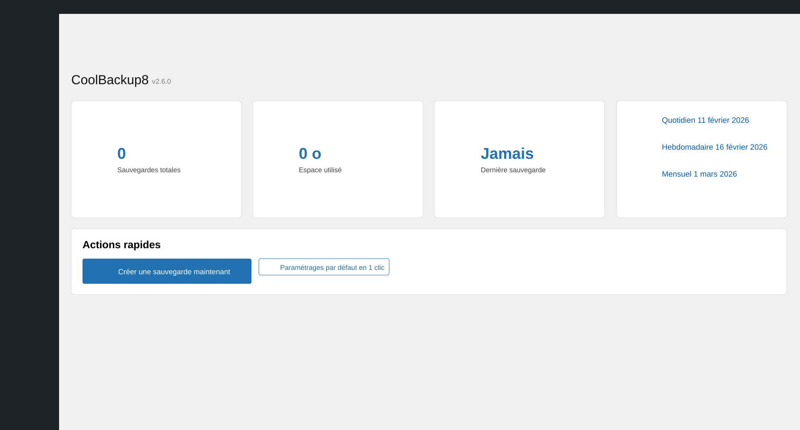
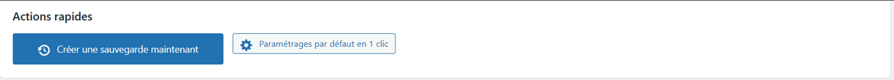
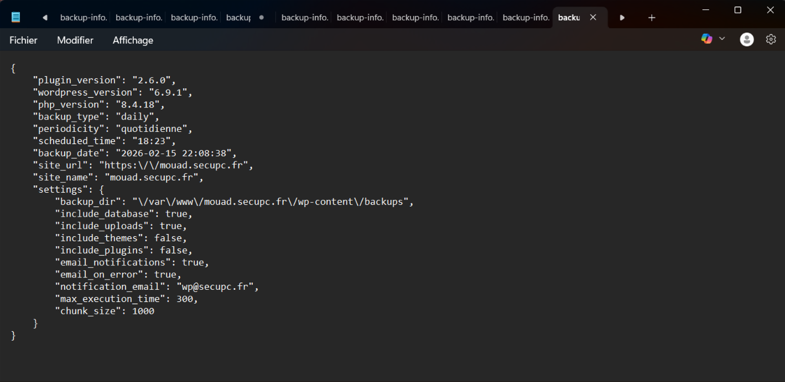
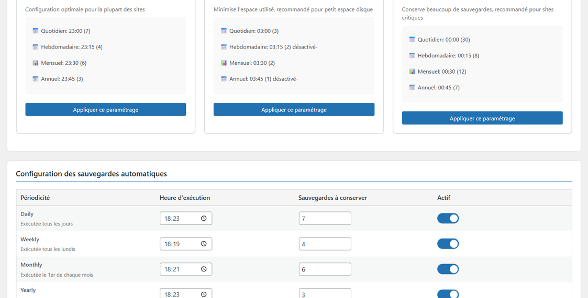
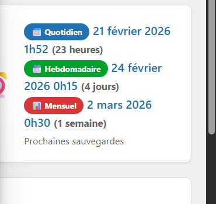
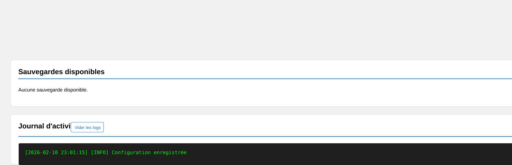
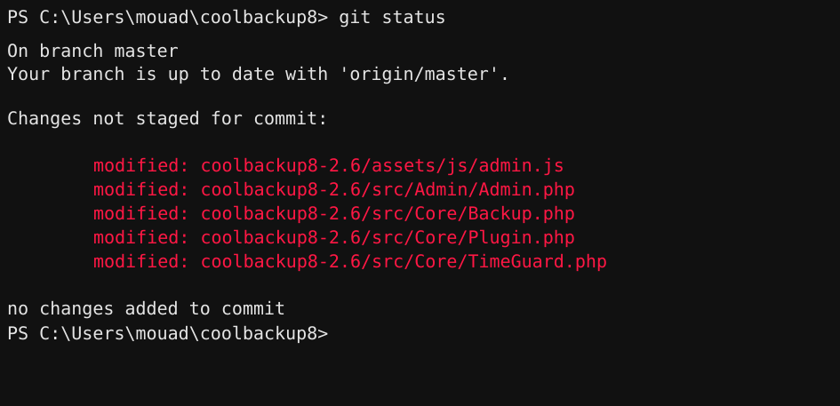

Développement du plugin WordPress CoolBackup8
CoolBackup8 est un plugin WordPress de sauvegarde développé pendant mon stage de deuxième année. Le besoin était de remplacer une ancienne solution qui ne fonctionnait plus correctement avec PHP 8, tout en gardant une interface simple pour administrer les sauvegardes d'un site.
Contexte du projet
Le projet partait d'un problème concret : l'ancien plugin de sauvegarde n'était plus adapté aux versions récentes de PHP. Il fallait donc repartir sur une solution plus propre, intégrée à WordPress, capable de centraliser les actions importantes dans le tableau de bord.
Le plugin devait permettre à un administrateur de lancer une sauvegarde, consulter les sauvegardes générées, accéder au détail d'une archive, ajuster certains paramètres et comprendre ce qui se passe grâce à un journal d'activité.
Fonctionnalités réalisées
- Création d'un tableau de bord dédié au plugin dans l'administration WordPress.
- Mise en place d'une sauvegarde manuelle pour générer une archive à la demande.
- Affichage des sauvegardes existantes avec leurs informations principales.
- Consultation du détail d'une sauvegarde et accès aux archives générées.
- Préparation d'un système de sauvegardes programmées avec prochaines exécutions visibles.
- Ajout d'une zone de configuration pour adapter le comportement du plugin.
- Utilisation d'un journal d'activité pour suivre les actions et faciliter les vérifications.
Méthode de travail
Le développement a été réalisé progressivement avec des points réguliers avec mon maître de stage. J'ai travaillé par étapes : compréhension du besoin, mise en place de la structure du plugin, création de l'interface, développement des actions de sauvegarde, tests et corrections.
Git m'a permis de suivre l'avancement du code et de conserver une trace des modifications. Les réunions et les prises en main à distance m'ont aidé à améliorer ma méthode de débogage, ma compréhension de WordPress et ma façon d'organiser le code PHP.
Captures principales




Suivi et tests
Les tests ont permis de vérifier le fonctionnement des sauvegardes, l'affichage des archives, la cohérence des paramètres et la lisibilité des informations dans l'administration WordPress.




Résultat obtenu
Le projet a abouti à un plugin fonctionnel dans son principe, avec une interface claire pour gérer les sauvegardes depuis WordPress. Cette réalisation m'a permis de travailler sur un vrai besoin professionnel, avec des contraintes de compatibilité PHP 8, d'organisation du code, de tests et d'expérience utilisateur côté administration.